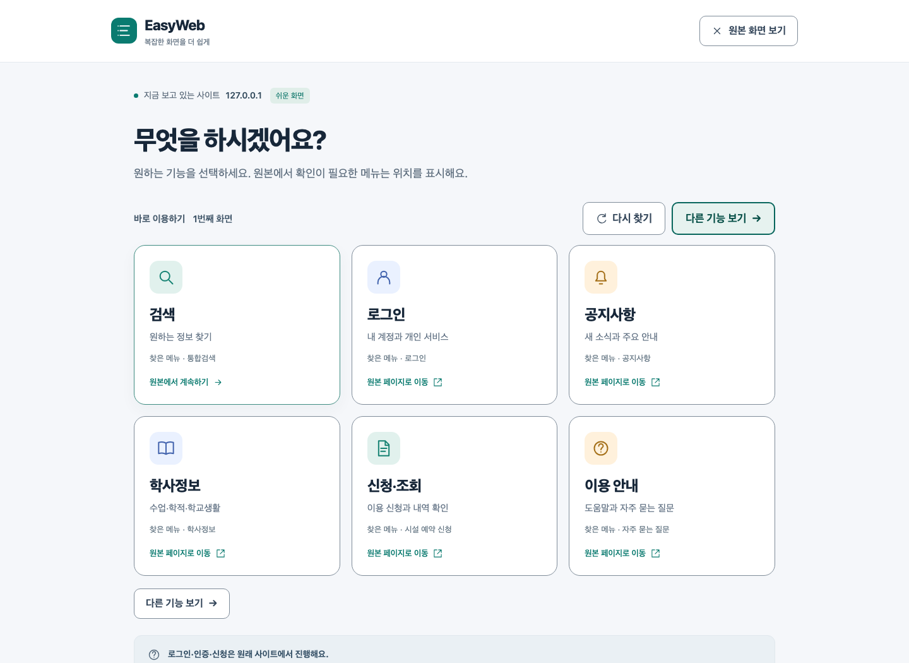

지금 보고 있는 페이지에서 실제로 있는 주요 기능을 찾아 큰 카드로 다시 보여 주는 Chrome 확장 프로그램입니다. 원래 사이트는 그대로 두고, 로그인·신청은 원래 화면에서 하도록 안내합니다.

처음 보는 기관 홈페이지에서도, 꼭 필요한 기능을 첫 화면에 찾아 줄 수 있을까?
어르신은 배너·뉴스 사이에서 필요한 메뉴를 못 찾고, 사이트마다 구조가 다르다
보이는 버튼을 읽어 큰 카드 6개로. 규칙이 찾고, 작은 AI가 순서를 정한다
37.0 → 42.2%처음 보는 88쪽에서 꼭 필요한 기능이 첫 화면에 나온 비율
지어내지 않는 작은 AI로 찾기 품질을 올렸다. 다음은 어르신이 실제로 더 빨리 찾는지 잰다
개발자의 할머니 사례 (가족에게 들은 이야기 · 관찰 기록 아님)
보이는 링크·버튼·검색창을 읽어 로그인·검색·공지사항·학사정보·신청·조회·이용 안내로 나눈다. 페이지에 없는 기능은 만들지 않는다.
처음엔 큰 카드 최대 6개, 더 필요하면 「다른 기능 보기」. 큰 글씨·키보드·스크린리더 지원, Esc로 원래 화면.
일반 링크는 바로 이동. 로그인·팝업·다운로드는 원본 위치만 표시하고 사용자가 직접 누른다.
AI가 없는 버튼을 지어내면 안 되는 서비스입니다. 그래서 규칙이 찾은 실제 버튼 중 무엇을 먼저 보여 줄지만 작은 AI가 정합니다.
학습: 23개 사이트 134쪽 정답표 · 순위 학습(LightGBM) · 지금은 시험판에서만 켬
꼭 필요한 기능 포함률 = 검토자가 "이 페이지에서 꼭 필요하다"고 꼽은 기능 중, EasyWeb 첫 화면(카드 6칸·자주 쓰는 버튼)에 나온 비율
공정하게 재려고 프로그램과 AI를 먼저 고정한 뒤 새 사이트를 모으고, 한 번만 채점했습니다. 정답은 프로그램 결과를 보지 않은 검토자(Claude)가 작성했습니다.
안내형 페이지에서 크게 올랐고, 홈은 그대로입니다(07). 게시글은 규칙 결함 3개를 고쳐 같은 88쪽에서 27.0% → 35.1%가 됐습니다.
| 남은 문제 | 왜 그런가 | 다음에 할 일 |
|---|---|---|
| 한계 1어르신 관찰 0건 | 정답은 검토자(Claude)가 만든 것. 실제 사람이 더 빨리 찾는지는 아직 모른다 | 할머니·어머니 짧은 관찰 → 디지털배움터 공용 PC에서 6~8명, 원본 vs EasyWeb 비교 (성공률·시간·오클릭) |
| 한계 2목표의 절반 수준 | 목표 85%에 지금 42.2%. 놓친 기능 대부분은 후보로 분류조차 안 된 것 | 검토 자료를 늘려 다시 학습 · 남은 게시글 결함(꼬리말 속 목록 링크 등) 수정 |
| 한계 3홈은 23% 안팎 | 여권민원·환급금 조회처럼 사이트마다 서비스 이름이 달라 공통 규칙으로 못 잡는다 | 기관 담당자가 중요 메뉴를 직접 고르는 기관용 설정 |
처음 보는 88쪽, 신뢰구간이 0보다 큼
오시는 길·조직 페이지
1.33MB AI가 확장 안에서 4ms
코드와 기록 전체 공개github.com/khyun-0123/easyweb
설치 방법 · 평가 자료 · 실패 기록까지 그대로 있습니다. EasyWeb은 웹 접근성 인증을 대신하지 않는 보조 도구입니다.